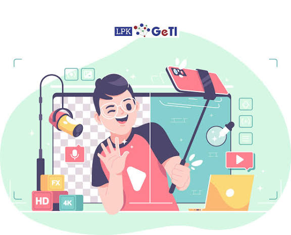
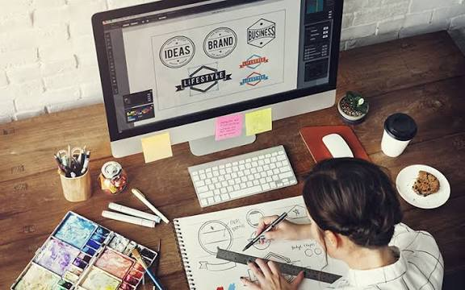
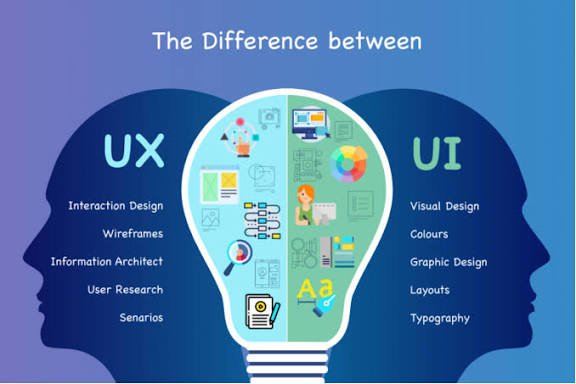
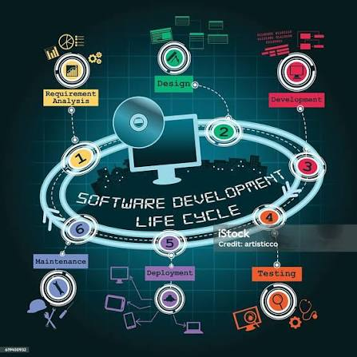
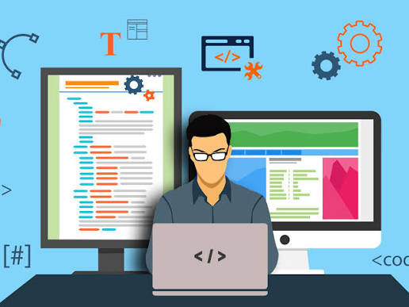
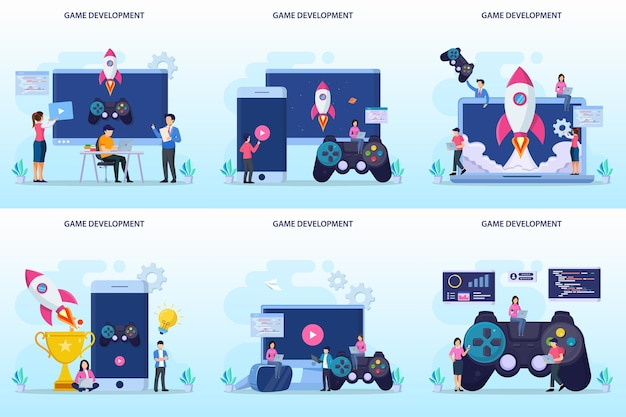
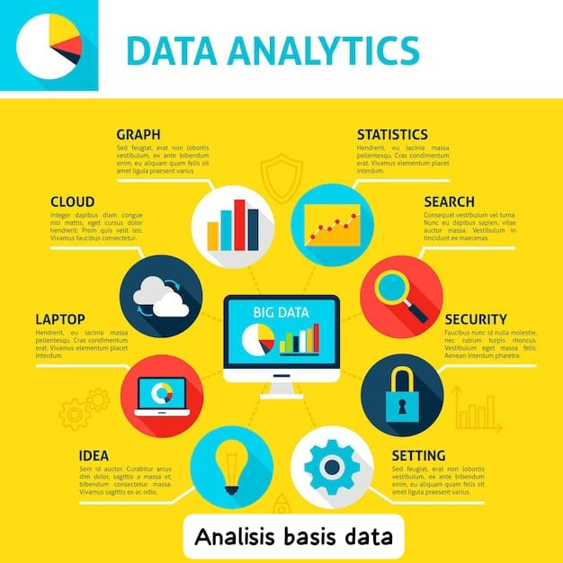
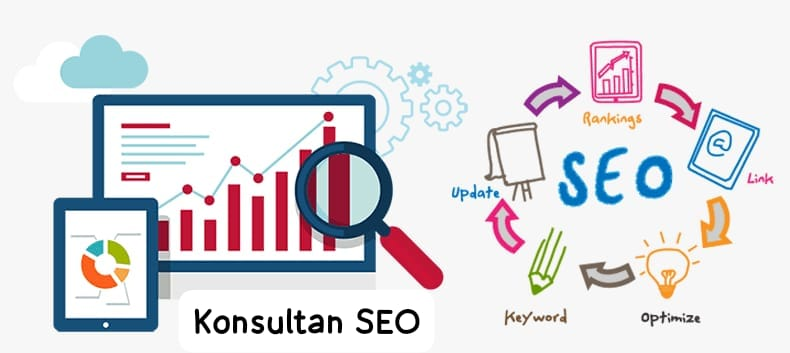
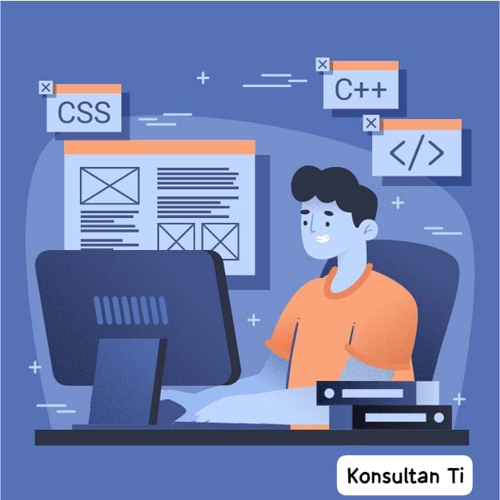
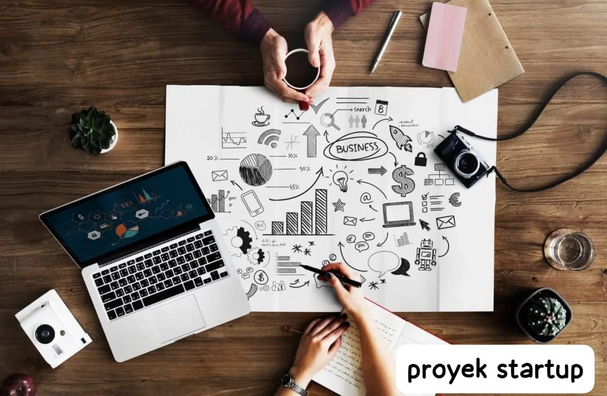

Intrusi Command Prompt (CMD)
1. ipconfig
Lihat konfigurasi IP, refresh DHCP
- "ipconfig /all" Tampilkan detail lengkap
- "ipconfig /release" Lepas alamat IP
- "ipconfig /renew" Dapatkan IP baru
- "ipconfig /flushdns" Membersihkan cache DNS
2. ping
Mengecek informasi ke alamat IP atau domain
Contoh: ping google.com
- "ping -t [alamat]" Ping terus menerus sampai dihentikan (CTRL + C)
- "ping -n [jumlah] [alamat]" Menentukan berapa kali ping dilakukan. Contoh:
ping -n 10 google.com
- "ping -l [ukuran] [alamat]" Mengatur ukuran paket data (byte). Contoh:
ping -l 1000 google.com
- "ping -4 / -6 [alamat]" Memaksa penggunaan IPv4 atau IPv6
- "ping -a [alamat IP]" Mencoba mencari nama host dari IP. Contoh:
ping -a 8.8.8.8
3. "tracert"
Melacak rute (jalur) yang dilalui paket data menuju alamat tujuan. Contoh: tracert google.com
4. "netstat"
Menampilkan koneksi jaringan aktif dan port yang digunakan. Contoh: netstat -an
5. "nslookup"
Mengecek informasi DNS dari sebuah domain. Contoh: nslookup google.com
6. "arp"
Menampilkan dan memodifikasi tabel ARP (Address Resolution Protocol). Contoh: arp -a
7. "hostname"
Menampilkan nama komputer saat ini. Contoh: hostname
8. "netsh"
Menampilkan konfigurasi jaringan (Contoh: profil wifi). Contoh: netsh wlan show profiles
IP Address
IP address adalah sebuah alamat yang dimiliki setiap perangkat secara global.
Kelas IP
- Kelas A: 10.10.0.2 | Gateway: 10.10.0.1 | Subnetmask: 255.0.0.0
- Kelas B: 176.10.0.2 | Gateway: 176.10.0.1 | Subnetmask: 255.255.0.0
- Kelas C: 192.168.0.2 | Gateway: 192.168.0.1 | Subnetmask: 255.255.255.0
- Kelas D: 224.0.0.2 | Gateway: 224.0.0.1 (Multicast)
- Kelas E: 240.0.0.2 | Gateway: 240.0.0.1 (Experimental)
Voltase Dan Watt Peralatan Elektronik
1. Mejikom - Voltase: 220v | Daya: Memasak (300-800w), Menghangatkan (50-100w)
2. TV - Voltase: 220v | Daya: 30-50 watt
3. Dispenser - Voltase: 220v | Daya: Pemanas (300-500w), Pendingin (80-120w)
4. Setrika - Voltase: 220v | Daya: 300-600 watt (Uap bisa sampai 1000w)
5. Kulkas - Voltase: 220v | Daya: 70-200 watt
6. Laptop - Voltase Adaptor: 100-240v | Daya: 45-90 watt
7. PC - Voltase: 220v | Daya: Biasa (200-400w), Gaming (500-800w)
8. HP - Voltase Pengisian: 5v | Daya: 5-25 watt
9. Mesin Cuci - Voltase: 220v | Daya: 300-500 watt
10. Charger - Input: 220v | Output: Normal (5v-2a/10w), Fast Charging (15-33w)
Aplikasi Virtual
a. VirtualBox
Pengertian: Software virtual gratis (open source) buatan Oracle yang digunakan untuk menjalankan sistem operasi (VM) di dalam suatu komputer fisik.
Cara Kerja: VirtualBox membuat yang meniru hardware komputer (CPU, RAM, hardisk, jaringan). Sistem operasi (guest OS) berjalan di atas OS utama (host OS).
Fungsi/Kegunaan:
- Menjalankan OS lain tanpa instal ulang komputer
- Uji coba software atau OS
- Belajar jaringan & server
- Testing aplikasi
Konfigurasi / Cara Menggunakan:
- Install VirtualBox
- Buat VM baru
- Pilih jenis OS (Windows/Linux)
- Atur RAM, CPU, storage
- Masukkan file ISO OS
- Jalankan VM dan install OS
Manfaat: Gratis, mudah digunakan, cocok untuk pemula, mendukung banyak OS, dan aman untuk eksperimen.
b. VMware
Pengertian: VMware adalah platform virtualisasi yang banyak digunakan di perusahaan dan data center untuk menjalankan beberapa mesin virtual dalam satu server fisik.
Cara Kerja: VMware menggunakan hypervisor untuk membagi sumber daya hardware menjadi beberapa mesin virtual yang berjalan secara bersamaan.
Fungsi / Kegunaan: Virtualisasi server, Cloud computing, Testing dan deployment aplikasi, Infrastruktur IT perusahaan.
Konfigurasi / Cara Menggunakan:
- Install VMware (Workstation atau ESXi).
- Buat mesin virtual baru.
- Atur CPU, RAM, dan storage.
- Install sistem operasi di VM.
- Kelola VM (snapshot, clone, jaringan).
Manfaat:
- Performa stabil.
- Fitur enterprise lengkap.
- Mendukung skala besar.
- Manajemen dan keamanan lebih baik.
c. Proxmox
Pengertian
Proxmox VE adalah platform virtualisasi berbasis Linux yang digunakan untuk mengelola mesin virtual dan container dalam satu sistem server.
Cara Kerja
Proxmox bekerja langsung di atas hardware (bare metal) sebagai hypervisor dan dikelola melalui web interface.
Fungsi / Kegunaan
- Virtualisasi server.
- Membuat private cloud.
- Manajemen VM dan container.
- Mendukung High Availability.
Konfigurasi / Cara Menggunakan
- Install Proxmox di server.
- Akses web panel melalui browser.
- Buat VM atau container.
- Atur resource dan storage.
- Jalankan dan kelola VM.
Manfaat
- Gratis dan open-source.
- Manajemen berbasis web yang mudah.
- Mendukung VM dan container.
- Cocok untuk server dan lab jaringan.
Profesi Dan Peluang Usaha Dalam Bidang IT
| No |
Jenis Profesi |
Deskripsi |
Contoh Pekerjaan |
Peluang Usaha |
Gambar |
| 1 |
Konten Creator |
Membuat dan mengelola konten digital untuk media online |
YouTuber, TikToker, Blogger, Streamer |
jasa pembuatan konten, monetisasi YouTube, endorsement |
 |
| 2 |
Desain Grafis |
Mendesain visual untuk kebutuhan promosi dan branding |
Desainer logo, poster, banner |
Jasa desain logo, Poster, branding UMKM |
 |
| 3 |
Desain UI/UX |
Mendesain tampilan dan pengalaman pengguna aplikasi atau website |
UI Desainer, UX Desainer, Reseacher |
Jasa desain aplikasi atau website |
 |
| 4 |
Pengembangan Software |
Mengembangkan perangkat lunak sesuai kebutuhan |
Software engineer, programer |
Jasa pembuatan software custom |
 |
| 5 |
Pengembangan Web |
Membuat dan mengelola website |
Web developer, Front-End/Back-end developer |
jasa pembuatan website, web company profile |
 |
| 6 |
Pengembangan Aplikasi Mobile |
membuat aplikasi berbasis Android/iOS |
Mobile app developer |
jasa pembuatan aplikasi mobile |
 |
| 7 |
Pengembangan Game |
Membuat game digital untuk hiburan atau edukasi |
Game developer, Game designer |
Pembuatan dan penjualan game |
 |
| 8 |
Internet Marketer |
Melakukan pemasaran produk melalui internet |
Digital marketer, Sosial media spesialis |
Jasa iklan online, Manajemen media sosial |
 |
| 9 |
Analisis Basis Data |
Mengelola dan menganalisis data untuk pengambilan keputusan |
Data analis, Data administrator |
Jasa pengolahan data dan analisis data |
 |
| 10 |
Konsultan SEO |
mengoptimalkan website agar mudah ditemukan di mesin pencarian |
SEO Specialist |
Jasa optimasi SEO website |
 |
| 11 |
Konsultan TI |
Memberi solusi dan saran terkait teknologi informasi |
IT Consultant |
Jasa konsultan sistem TI |
 |
| 12 |
Konsultan Keamanan Jaringan |
Menjaga dan meningkatkan keamanan jaringan |
Network security engineer |
Jasa audit dan keamanan jaringan |
 |
| 13 |
Pembisnis E-commerce |
Menjalankan bisnis jual beli secara online |
Owner online shop, Seller marketplace |
Toko online, Dropshipping |
|
| 14 |
Proyek startup |
Mengembangkan usaha berbasis teknologi dan inovasi |
founder startup |
mendirikan perusahaan rintisan berbasis TI |
 |